CULTURA
Jujuy es una provincia del noroeste argentino con una rica herencia cultural fusionando tradiciones indígenas (como los quechuas y aimaras) con influencias coloniales españolas. Sus festividades, como el Carnaval y la Pachamama, reflejan esta mezcla, donde la música folklórica (con instrumentos como el charango y la quena) y los bailes típicos (como el carnavalito) son centrales. La gente es cálida y mantiene un fuerte vínculo con la tierra y sus raíces ancestrales.
 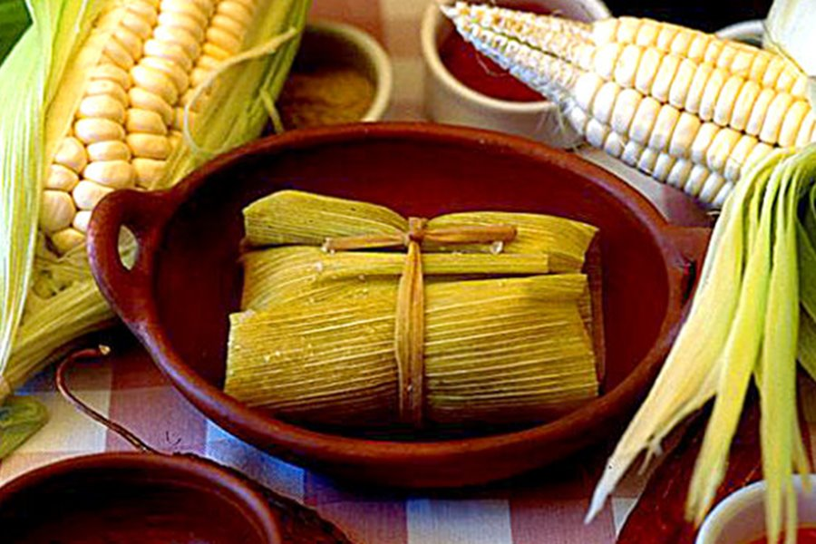
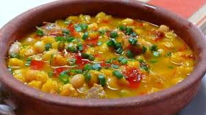
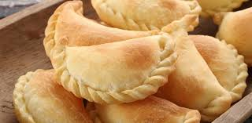
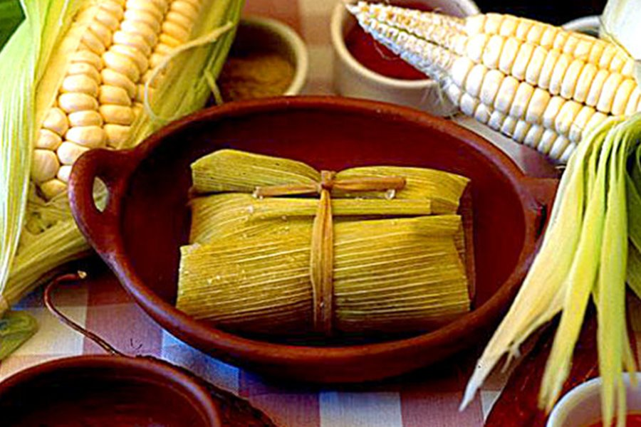
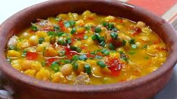
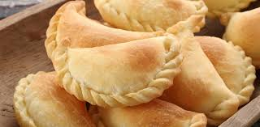

 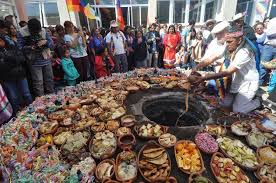
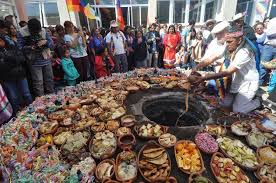
 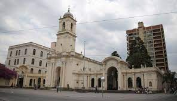
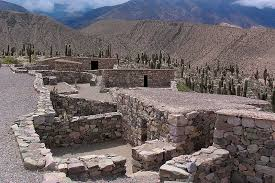
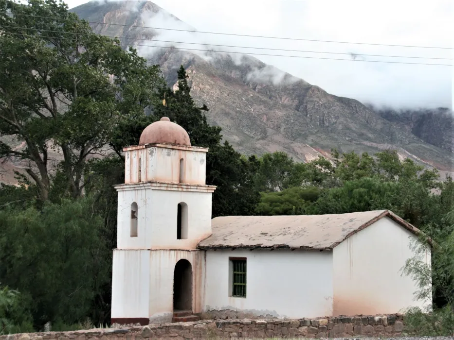
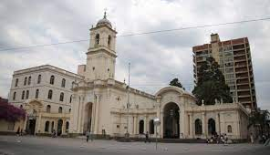
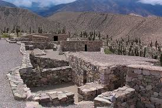
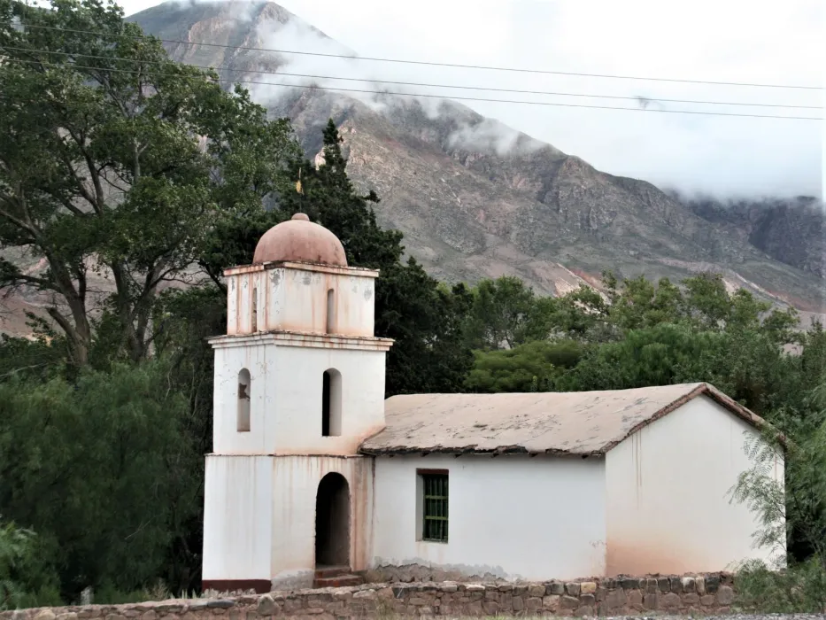